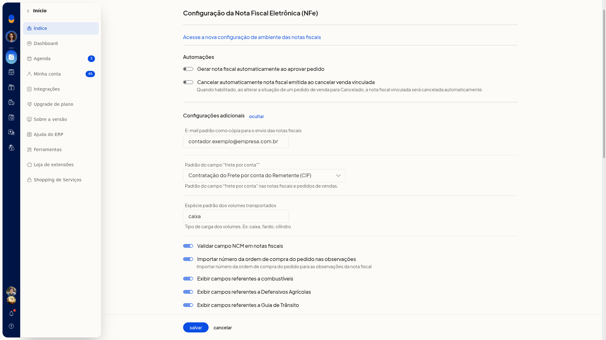

Peso e volumes na nota fiscal
Na Configuração da nota fiscal eletrônica (NFe) do ERP da Olist, você define a espécie padrão dos volumes transportados. Essa espécie é o tipo de carga usado nas notas, como caixa ou fardo.
Nesta tela não há campos de peso nem de quantidade de volumes.
Pré-requisitos
- A empresa precisa ter o módulo de nota fiscal eletrônica.
- Se a opção não aparecer para você, peça acesso ao administrador da conta.
Instruções
-
Acesse Configurações > Configurações ERP > Notas Fiscais > Configuração da nota fiscal eletrônica (NFe).
-
Em Configurações adicionais, clique em exibir.
-
No campo Espécie padrão dos volumes transportados, digite o tipo de carga, como caixa ou fardo. O preenchimento não é obrigatório.


-
Clique em Salvar para gravar a espécie padrão dos volumes.